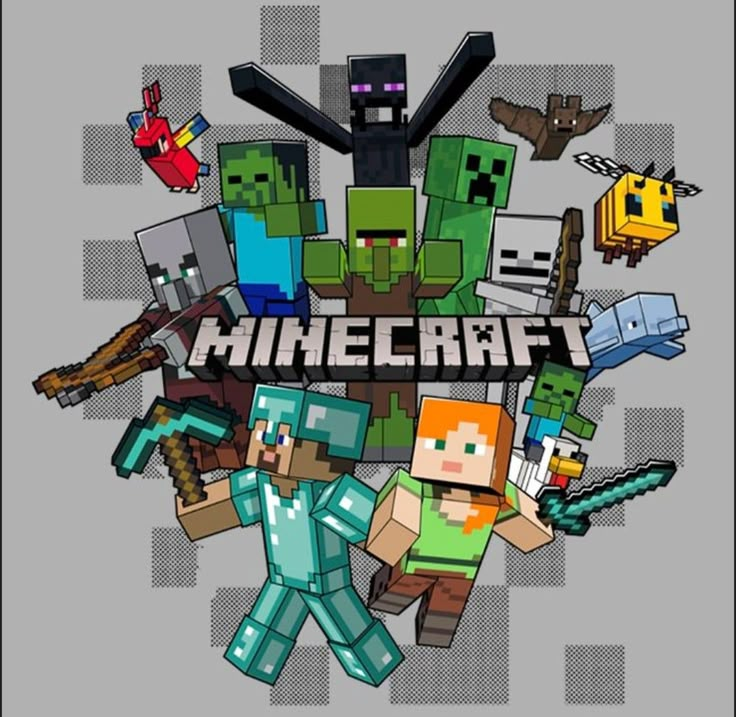
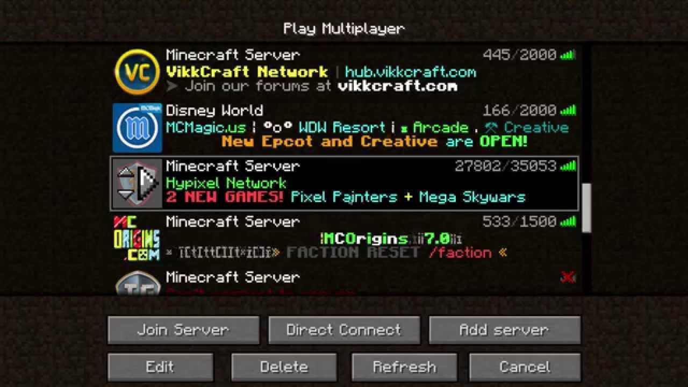

Should YOU buy Minecraft?
March 2, 2022 by Asani W.

Minecraft is one of the games with the longest running traction ever seen. From its first release to today it has stayed popular and is known as a fun game to play with friends or to pass the time. Minecraft offers a wide range of experiences for all kinds of people: some play for fun, some make creations using the redstone mechanics... PEOPLE HAVE MADE COMPUTERS IN MINECRAFT! That's A GAME inside A GAME?! Insane, right?! Even governments and schools turn to Minecraft, as it acts as a uniting force across people of many backgrounds.
So what now? Are you interested? Well, if you're a cheapskate like me, you must be wondering if there is a way to get Minecraft for free... There is an answer to that, but it's somewhat of an illegal one, haha, so don't tell anyone you heard it from me, ok! There is a version of Minecraft called the "cracked" version. I would not recommend trying this method, as anything that seems too good to be true sometimes is. It may seem free, but maybe you are the product. People can easily access your personal information, emails, cards and passwords if you're not careful. Now, a word from today's sponsor: [redacted] VPN, Im joking but no seriously I 100% recconmend buying the game or not playing it all. Data is a precious resource you should protect yours at all costs.
So I bought Minecraft. What now?
March 2, 2022 by Asani W.

Let me be honest with you here, Ive played minecraft a few times throughout the years with friends who have come and gone... But truth be told... Ive NEVER actually beaten the game before as in, Killing the enderdragon as the end goal. Crazy I know right yet im giving you advice but that just gees to say. There are many differnt ways to enjoy minecraft. You dont specifically have to play the generic way. Thats where Mods come in. Mods are basically community made additions to the game like for example im going to assume you know of the Justice League. In normal minecraft that doesnt exist but someone on the internet could make a modification you add to miencraft to play as superman or any thing you could imagine. The possibilites are endless! From Shaders which enhances the games aesthetics and textures to Mods which completly changes the gaame completly. Safe to say minecraft is the perfect Sandbox game!
You thought that was all? Let me tell you more. Dont have Friends to play with? Yeah been there a few times myself but dont worry, minecraft has a multiplayer option wheere you can join servers alreaady made and played by millions of people! One popular server is The Hypixel server. When you start up multiplay just type in play.hypixel.net and you should be able to join in! Servers such as those offer a vaireity of differnt gaame modes such as the ever famous Bedwars or Skyblock, want to fight other players go do PVP want to help solve a mystery theres a mode for that. Safe to say Buying minecraft is never a mistake and it never gets boring. THE LIMITATION IS YOU!!